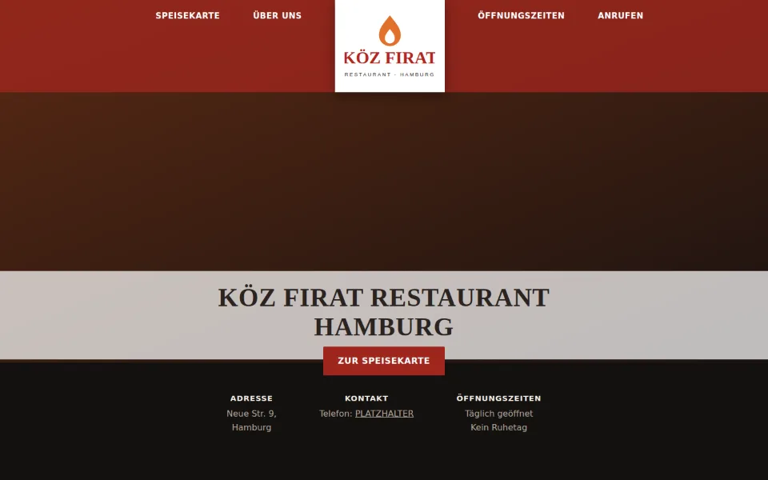
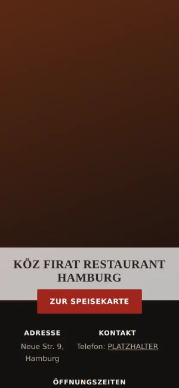

Case Study 04 / 30 · Gastronomie & Hotel
Köz Firat Restaurant
Dunkle Restaurant-Seite mit Speisekarte in Tabs, Öffnungszeiten mit Tagesmarkierung und eingebetteter Karte.


Entwurf ohne Auftrag. Köz Firat Restaurant ist kein Kunde; Name und Marke gehören dem Betrieb. Telefonnummer ist ein Platzhalter, Preise und Öffnungszeiten sind laut Hinweis im Code beispielhaft und vor Veröffentlichung abzugleichen; das Hero-Foto fehlt im Ordner, es greift ein Farbverlauf.
Ausgangslage
Köz Firat ist ein türkisches Restaurant in der Neuen Straße 9 in Hamburg mit Döner vom Spieß, Grillgerichten und täglicher Öffnung ohne Ruhetag. Gäste brauchen die Karte, die Zeiten und den Weg. Der Entwurf packt das auf eine Seite, die sich auf dem Handy wie am Rechner schnell lesen lässt.
Idee
Köz heißt Glut, und so sieht die Seite aus: fast schwarzer Hintergrund, Orange und Safrangelb als Akzente, im Hero ein warmer Lichtschein von unten. Das Logo sitzt mittig in der Navigation, die Schlagzeile steht auf einem hellen Band über dem Hero. Systemschriften halten die Seite leicht und schnell.
Was die Seite kann
- Speisekarte in TabsDöner, Vom Grill, Vegetarisch und Getränke werden aus einer Liste im JS aufgebaut, mit Beschreibung und Preis je Gericht.
- ÖffnungszeitenAlle Wochentage als Liste, der heutige Tag wird automatisch hervorgehoben.
- Info-LeisteAdresse, Telefon und Öffnungshinweis direkt unter dem Hero.
- KarteEingebettete Google-Maps-Karte zum Standort im Abschnitt „Besuchen Sie uns“.
- AnrufenTelefon-Links in Navigation und Info-Leiste, im Hero ein Button zur Speisekarte.
Dein Betrieb
So eine Seite für dich?
Schreib mir kurz, was du anbietest und was deine Website leisten soll. Du bekommst eine ehrliche Einschätzung, was sie kostet und was sie dir bringen kann.
Projekt anfragen